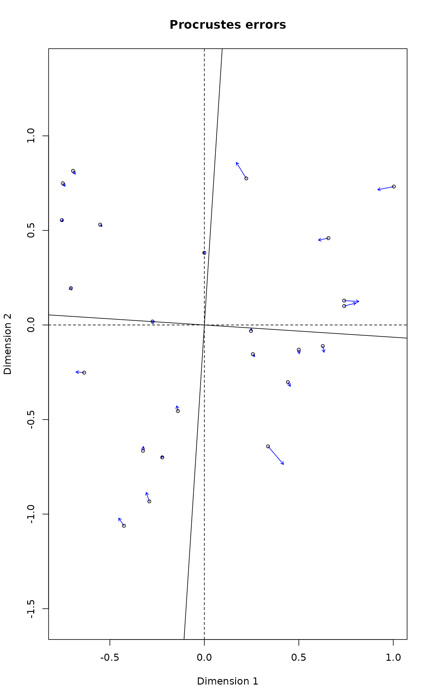

decostand.RdThe function provides some popular (and effective) standardization methods for community ecologists.
decostand(x, method, MARGIN, range.global, logbase = 2, na.rm=FALSE, ...) wisconsin(x)
| x | Community data, a matrix-like object. |
|---|---|
| method | Standardization method. See Details for available options. |
| MARGIN | Margin, if default is not acceptable. |
| range.global | Matrix from which the range is found in
|
| logbase | The logarithm base used in |
| na.rm | Ignore missing values in row or column standardizations. |
| ... | Other arguments to the function (ignored). |
The function offers following standardization methods for community data:
total: divide by margin total (default MARGIN = 1).
max: divide by margin maximum (default MARGIN = 2).
frequency: divide by margin total and multiply by the
number of non-zero items, so that the average of non-zero entries is
one (Oksanen 1983; default MARGIN = 2).
normalize: make margin sum of squares equal to one (default
MARGIN = 1).
range: standardize values into range 0 ... 1 (default
MARGIN = 2). If all values are constant, they will be
transformed to 0.
rank, rrank: rank replaces abundance values by
their increasing ranks leaving zeros unchanged, and rrank is
similar but uses relative ranks with maximum 1 (default
MARGIN = 1). Average ranks are used for tied values.
standardize: scale x to zero mean and unit variance
(default MARGIN = 2).
pa: scale x to presence/absence scale (0/1).
chi.square: divide by row sums and square root of
column sums, and adjust for square root of matrix total
(Legendre & Gallagher 2001). When used with the Euclidean
distance, the distances should be similar to the
Chi-square distance used in correspondence analysis. However, the
results from cmdscale would still differ, since
CA is a weighted ordination method (default MARGIN = 1).
hellinger: square root of method = "total"
(Legendre & Gallagher 2001).
log: logarithmic transformation as suggested by
Anderson et al. (2006): \(\log_b (x) + 1\) for
\(x > 0\), where \(b\) is the base of the logarithm; zeros are
left as zeros. Higher bases give less weight to quantities and more
to presences, and logbase = Inf gives the presence/absence
scaling. Please note this is not \(\log(x+1)\).
Anderson et al. (2006) suggested this for their (strongly) modified
Gower distance (implemented as method = "altGower" in
vegdist), but the standardization can be used
independently of distance indices.
Standardization, as contrasted to transformation, means that the entries are transformed relative to other entries.
All methods have a default margin. MARGIN=1 means rows (sites
in a normal data set) and MARGIN=2 means columns (species in a
normal data set).
Command wisconsin is a shortcut to common Wisconsin double
standardization where species (MARGIN=2) are first standardized
by maxima (max) and then sites (MARGIN=1) by
site totals (tot).
Most standardization methods will give nonsense results with
negative data entries that normally should not occur in the community
data. If there are empty sites or species (or constant with
method = "range"), many standardization will change these into
NaN.
Returns the standardized data frame, and adds an attribute
"decostand" giving the name of applied standardization
"method".
Common transformations can be made with standard R functions.
Anderson, M.J., Ellingsen, K.E. & McArdle, B.H. (2006) Multivariate dispersion as a measure of beta diversity. Ecology Letters 9, 683--693.
Legendre, P. & Gallagher, E.D. (2001) Ecologically meaningful transformations for ordination of species data. Oecologia 129, 271--280.
Oksanen, J. (1983) Ordination of boreal heath-like vegetation with principal component analysis, correspondence analysis and multidimensional scaling. Vegetatio 52, 181--189.
#> Callvulg Empenigr Rhodtome Vaccmyrt Vaccviti Pinusylv Descflex Betupube #> 1 1 1 1 1 1 1 1 #> Vacculig Diphcomp Dicrsp Dicrfusc Dicrpoly Hylosple Pleuschr Polypili #> 1 1 1 1 1 1 1 1 #> Polyjuni Polycomm Pohlnuta Ptilcili Barbhatc Cladarbu Cladrang Cladstel #> 1 1 1 1 1 1 1 1 #> Cladunci Cladcocc Cladcorn Cladgrac Cladfimb Cladcris Cladchlo Cladbotr #> 1 1 1 1 1 1 1 1 #> Cladamau Cladsp Cetreric Cetrisla Flavniva Nepharct Stersp Peltapht #> 1 1 1 1 1 1 1 1 #> Icmaeric Cladcerv Claddefo Cladphyl #> 1 1 1 1sptrans <- wisconsin(varespec) ## Chi-square: PCA similar but not identical to CA. ## Use wcmdscale for weighted analysis and identical results. sptrans <- decostand(varespec, "chi.square") plot(procrustes(rda(sptrans), cca(varespec)))